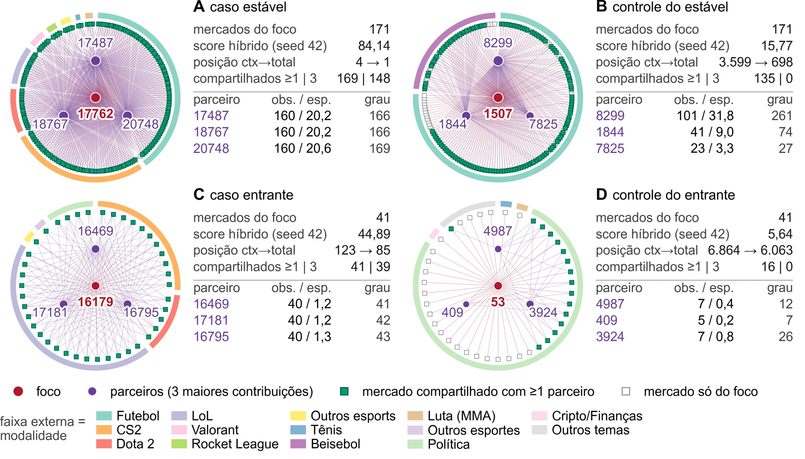
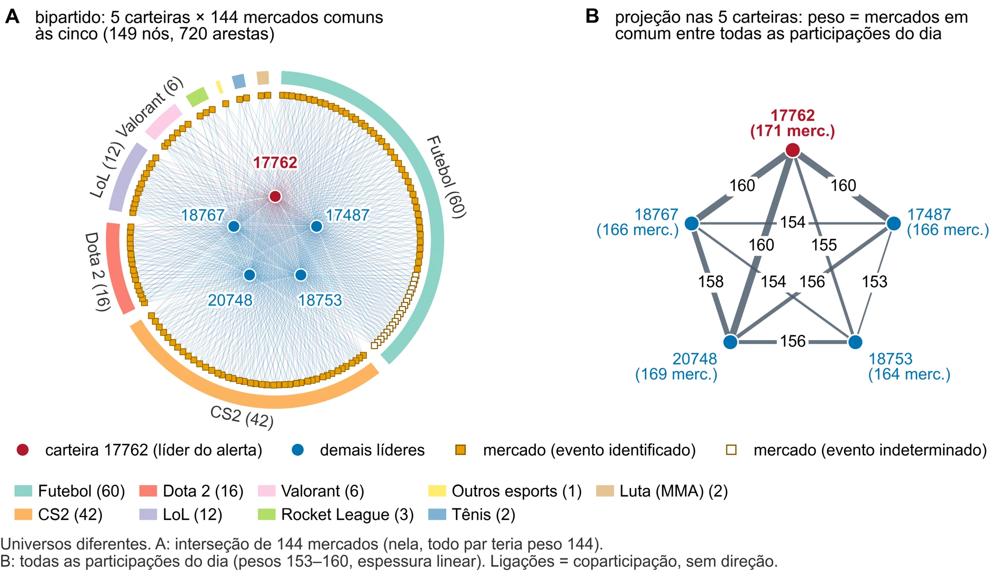
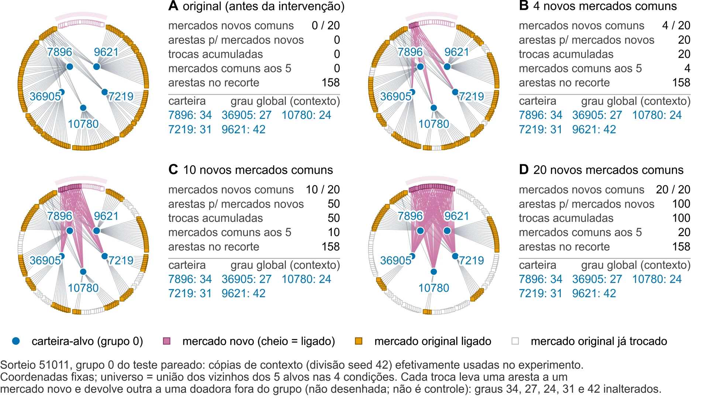
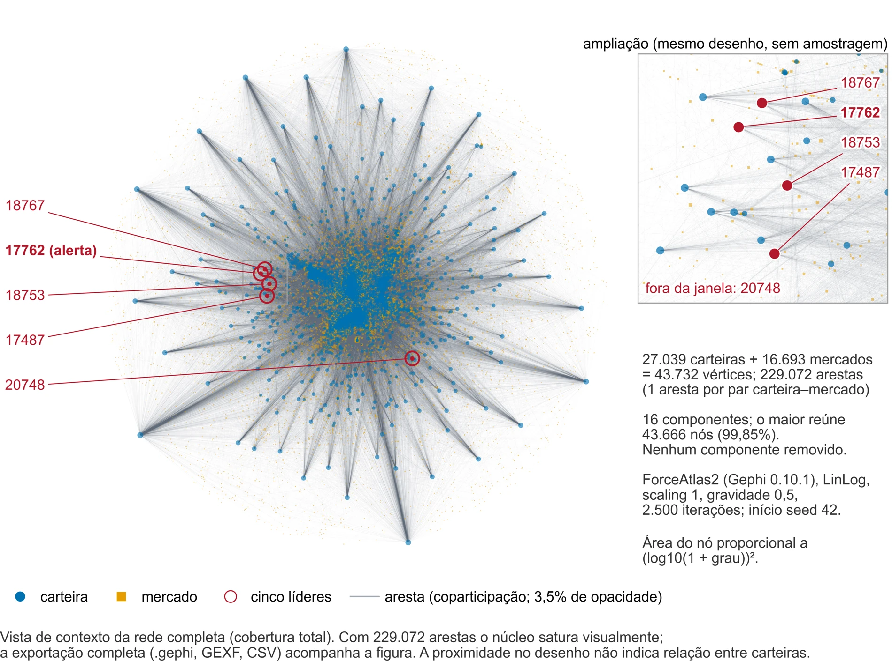

A rede aprende as conexões?
0,9620 AUROC médiaSim, na tarefa de distinguir ligações reservadas de pares negativos amostrados. Esse resultado avalia previsão de ligações.
Conhecer a avaliação →Redes neurais em grafos para identificar padrões atípicos em mercados de previsão.
O BetGraph observa quem participa de quais mercados. Uma GNN aprende com essas relações e ajuda a priorizar carteiras com padrões de coparticipação incomuns.
Esquema ilustrativo · não representa um caso real
endereços, não pessoas
após a filtragem
pares carteira–mercado
cobertura completa do recorte
O ESTUDO EM TRÊS PERGUNTAS
Sim, na tarefa de distinguir ligações reservadas de pares negativos amostrados. Esse resultado avalia previsão de ligações.
Conhecer a avaliação →No teste pareado de 20 mercados, a híbrida recupera 73,33% dos alvos, em média. No top 541, recupera todos.
Comparar os métodos →Ao usar todas as ligações do dia com pesos congelados, 94 carteiras permanecem no top 100 em cada seed.
Inspecionar as carteiras →A CONCLUSÃO QUE OS DADOS SUSTENTAM
A GNN híbrida supera a similaridade isolada nos cenários avaliados, mas fica próxima do detector relacional. O estudo não demonstra superioridade geral da GNN nem confirma fraude nas carteiras reais.
ANTES DE COMEÇAR
Não. É um endereço que realiza negociações. A mesma carteira pode participar de vários mercados e fazer várias operações em cada um. Um endereço não equivale necessariamente a uma pessoa.
Uma pergunta negociável sobre um resultado futuro. Uma partida pode gerar vários mercados: vencedor, total de gols e outros resultados. Por isso, compartilhar mercados não significa compartilhar o mesmo número de eventos independentes.
Que uma carteira participou de um mercado. No grafo analítico, várias operações e outcomes do mesmo par viram uma única ligação. Há dois tipos de nós: carteiras e mercados; o grafo não representa contrapartes das negociações.
02 / METODOLOGIA
Da extração dos dados ao score de uma carteira: acompanhe o caminho da análise, sem precisar conhecer GNNs de antemão.
Polymarket / Polygon
Consultas SQL no Dune
Filtrar, agregar e
conferir os arquivos
Grafo bipartido
carteira–mercado
GNN + previsão de
ligações + contraste
Score híbrido e
inspeção dos casos
A DIVISÃO DO GRAFO
Ligações visíveis para a passagem de mensagens.
Ligações que a rede aprende a prever.
Seleciona o checkpoint e acompanha a perda.
Avalia previsão em ligações reservadas.
Os quatro conjuntos separam ligações, não quatro grupos de carteiras. Depois da avaliação, o ranking retrospectivo usa todas as 229.072 ligações com os pesos e transformadores congelados.
PASSAGEM DE MENSAGENS
Esquema didático. A carteira A é apenas o foco da explicação; todos os nós são processados.
Carteiras e mercados têm atributos numéricos. As arestas dizem onde houve participação. O grafo permite combinar essas informações com as da vizinhança.
Um vetor de números aprendido pela rede para representar um nó. Carteiras podem ter representações semelhantes por causa de seus atributos e relações.
DO EMBEDDING AO SCORE
Consideramos parceiros com pelo menos dois mercados em comum. Somamos as três maiores contribuições e dividimos por três. Se houver menos de três parceiros elegíveis, os termos restantes valem zero.
Multiplica a surpresa da sobreposição pela similaridade dos embeddings. É o modelo principal.
Usa a surpresa ajustada pelos graus do grafo. Não aprende embeddings e serve como comparador.
Usa os mesmos embeddings da GNN, retirando a surpresa do score. É a ablação estudada.
dᵤ e dᵥ são os graus das carteiras; dₘ é o grau do mercado; E é o total de ligações da cobertura utilizada; cᵤᵥ é o número observado de mercados compartilhados. O esperado é calculado para cada par elegível, a partir do grafo. Não depende apenas da carteira mais conectada.
A Poisson é um modelo de referência aproximado. Correlações entre mercados de uma mesma partida limitam a interpretação da surpresa como evidência independente.
Consultar a implementação ↗AUROC: resume a capacidade de ordenar ligações reais acima de pares negativos ao variar o limiar. O valor 0,5 corresponde à referência aleatória; 1 indica separação perfeita nesse teste. A média de 0,9620 avalia ligações, não fraude.
AP (precisão média): resume a relação entre precisão e revocação ao percorrer o ranking de ligações. Depende também da composição dos exemplos avaliados; aqui os negativos são amostrados na proporção 1:1.
Seed: fixa uma sequência pseudoaleatória. As seeds 42, 73 e 2026 repetem o treinamento com inicializações distintas. O sorteio dos dados e dos negativos tem seeds próprias.
Spearman (ρ): mede a associação entre as posições de dois rankings, de −1 a 1. Próximo de 1 significa ordenações semelhantes. O símbolo ρ é a letra grega rô, não um valor-p; estabilidade de ranking não demonstra que os alertas sejam verdadeiros.
GNN heterogênea com duas camadas, dimensão oculta 64, embedding 32 e dropout 0,1. Adam com taxa 0,001; até 100 épocas; paciência 15. A perda combina previsão de ligações e contraste, com peso 0,1 para o contraste. Seeds dos treinos: 42, 73 e 2026.
As transformações e a construção dos atributos seguem o protocolo de contexto. A preparação usa log1p para reduzir a assimetria de atributos selecionados e StandardScaler para padronizar suas escalas, com transformadores salvos. A duração ausente recebe uma flag e imputação; duração total de atividade e maker/taker não entram como features deste estudo. Volume e frequência não substituem maker/taker. “Primeira atividade” significa a primeira atividade observada no recorte filtrado.
A seed 43 fixa negativos da validação e a 44 fixa negativos do teste, ambos na proporção 1:1. Os rótulos de carteiras-alvo são usados para avaliar a recuperação; não são rótulos supervisionados de fraude para treinar a GNN.
03 / DIA REAL
Explore as 27.039 carteiras e compare o contexto de treino com a cobertura completa do dia. Selecione uma carteira para entender seus números.
carteiras permaneceram no top 100
nas três seeds, ao ampliar a cobertura
137.444 → 229.072
ligações disponíveis para a inferência
| Carteira | Posição | Score | Pos. contexto → total | Mercados | Parceiro¹ | Comuns¹ | Esperados¹ |
|---|
¹ Parceiro de referência exibido no painel original para a cobertura selecionada; o score agrega até três parceiros. Os IDs são pseudônimos do projeto. Use a ficha abaixo para examinar as contribuições verificadas dos casos selecionados.
INSPEÇÃO DOS CASOS REAIS
As cinco líderes compartilham 144 mercados em conjunto. Na leitura exploratória inicial dos títulos, 101 desses mercados foram associados a 61 confrontos distintos. Outros títulos exigem metadados ou interpretação adicional. A concentração pode motivar inspeção; não prova intenção coordenada.
04 / EXPERIMENTOS CONTROLADOS
As intervenções permitem medir a recuperação de comportamentos conhecidos em cópias do grafo. Compare os métodos sob o mesmo desenho experimental.
Selecionamos 50 carteiras existentes, em dez grupos de cinco. As ligações são reorganizadas para que cada grupo passe a compartilhar novos mercados, preservando os graus.
Cada alvo tem um controle de mesmo grau, sem receber a intervenção dirigida. Controles ajudam a interpretar o efeito, mas não são carteiras comprovadamente “normais”.
COMPARAÇÃO INTERATIVA
A CONTA DOS PARTICIPANTES
Cada bloco mostra um grupo. As cores representam a intensidade de mercados compartilhados. Os círculos são carteiras, não apostas.
No misto, o resultado de 20 mercados soma 15 + 15 + 20 participações-alvo de três sorteios. As outras carteiras recebem intensidades menores.
No pareado, os 50 alvos de cada sorteio recebem a mesma intensidade. Reportamos a média dos rankings. A composição dos grafos e a concorrência no topo são diferentes; os denominadores têm interpretações distintas.
É compatível recuperar todos os casos intensos acumulados no primeiro e, em média, 36,67 por ranking no segundo. Essa diferença não isola uma causa única.
Antes: onde os participantes estavam no grafo original. Alguns já podiam estar no topo.
Depois: onde ficam no grafo alterado, com treino e ranking refeitos conforme o protocolo.
Os dois momentos evitam atribuir à intervenção uma posição que já existia. Os controles não precisam ter boa recuperação: a comparação relevante é se os alvos passam a ser mais destacados.
Cada cenário é retreinado. Este experimento não mede a reação de um detector congelado a um ataque novo.
DESENHO PAREADO
Posição menor significa maior destaque. A posição pode piorar mesmo com mais mercados comuns: os atributos, os embeddings e a competição relativa também mudam. As intensidades não devem ser interpretadas como uma garantia de resposta monotônica.
05 / BIBLIOTECA DE EVIDÊNCIAS
Gráficos e tabelas acompanhados da pergunta que respondem, da interpretação e dos arquivos para consulta. Abra uma figura para ampliar.
VISUALIZAÇÕES DO GRAFO
Figuras recebidas em 15/11/2026. Layouts e projetos no Gephi 0.10.1; composição final em Matplotlib com as coordenadas do Gephi. Ler legendas e limitações completas ↗

Quatro carteiras, pareadas por número de mercados. A vista mostra o foco, seus três parceiros de maior contribuição e os mercados do foco; não inclui todas as conexões dos parceiros.

O painel bipartido contém 144 mercados comuns às cinco carteiras. A projeção usa as participações completas do dia, com pesos de 153 a 160. São universos diferentes.

O mesmo grupo do sorteio 51011, antes e após 4, 10 e 20 mercados comuns. Posições fixas e graus preservados permitem comparar as mudanças estruturais.

43.732 nós e 229.072 ligações, sem amostragem, em 16 componentes. Layout ForceAtlas2; proximidade visual não constitui evidência de coordenação.
06 / CIÊNCIA REPRODUZÍVEL
O código, o dataset e os arquivos de resultados estão disponíveis para examinar e reproduzir o estudo.
Dois CSVs brutos, três tratados, documentação e hashes SHA-256.
DOI 10.5281/zenodo.2423022302 / CÓDIGOModelo principal, comparadores, testes e comandos Make.
Branch main03 / MANUSCRITOMetodologia, resultados, discussão e referências em 12 páginas.
Versão de trabalho · incorporação dos grafos pendenteOs cinco CSVs do Zenodo são idênticos aos arquivos de referência. A filtragem dos brutos reproduziu os três tratados com hashes idênticos em 15/11/2026. Consultar verificação ↓
EXECUÇÃO LOCAL
Na raiz do repositório clonado, em Linux ou WSL, com Python 3.12, GNU Make, curl e unzip:
mkdir -p data/zenodo
curl --fail --location --retry 3 \
'https://zenodo.org/records/24230223/files/betgraph_data_16set.zip?download=1' \
--output data/zenodo/betgraph_data_16set.zip
unzip -n data/zenodo/betgraph_data_16set.zip -d data/zenodo
(cd data/zenodo/betgraph_data_16set && sha256sum -c SHA256SUMS)
make ambiente
make validar
make testes
make artigo BRUTOS=data/zenodo/betgraph_data_16set/brutosO executor cria uma nova pasta de resultados. Use o caminho impresso como RODADA nos comandos seguintes. O teste pareado é uma etapa adicional.
| Comando | Para quê? |
|---|---|
make artigo-original BRUTOS=… | Treinar e avaliar apenas o dia real nas três seeds. |
make pareado RODADA=… | Avaliar os mesmos grupos nas três intensidades. |
make dados-artigo RODADA=… | Extrair os dados que alimentam tabelas e gráficos. |
make figuras-ambiente | Preparar dependências de exportação das figuras. |
make conteudo | Gerar tabelas e as duas versões dos gráficos. |
make benchmark BRUTOS=… REPETICOES=3 | Medir tempo e memória na máquina utilizada. |
PNG e PDF usam Kaleido e precisam de Chrome. As instruções completas e variáveis estão no Makefile. Tempos de execução dependem da máquina e do protocolo.
ONDE ESTAMOS
O estudo cobre um dia e não dispõe de rótulos independentes de fraude. Arestas agregadas não preservam toda a sequência de trades; maker/taker não está disponível. O grafo representa participação, não contrapartes.
Os padrões artificiais aumentam a coparticipação, justamente o sinal capturado pela surpresa. A boa recuperação nesses cenários não garante desempenho em todas as formas de manipulação. Seeds e sorteios reutilizam dados e não são repetições inteiramente independentes.
O caminho futuro é avaliar outros dias, ajustar referências por evento, testar padrões diferentes e medir a resposta de um detector congelado. Essas extensões não foram executadas nesta versão.